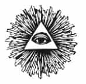

ON DOKUZUNCU BÖLÜM
PETROL DOLARLARI
NÜFUS KONTROLÜ
İlluminati’nin yirminci yüzyıldaki en önemli amacı, çeşitli bileşenleri içeren, geniş çaplı bir planı uygulamaktı. İlk iki dünya savaşının ardından, Müslüman dünyasına karşı bir üçüncüsü gelecekti. Sözde Soğuk Savaş’ın bitmesine karşın, pek çok bileşen üçüncü ve son bir savaşın sahnelenmesi için kullanıldı. Bu plan temelde, Üçüncü Dünya olarak tanımlanan ülkeler karşısında Batı’nın gücünü artırmaya dayanıyordu. Bu strateji, Suudi ailesinin iş birliği yoluyla Batı’nın petrol üzerindeki tekelini güçlendirerek zenginliğini artırmak ve tek bir küresel dünya düzenine yönlendirmek yoluyla sağlandı. Bu stratejinin altında yatan felsefe, Yuvarlak Masa’nın İngiltere Tedbirli Sosyalistleri Cemiyeti’nin desteğinde ortaya koyduğu eylemleri yoluyla geliştirilen Maltuzyanizm olarak bilinir.
Tebdirciler (Fabians), stratejilerini Karl Marx’tan farklı olarak, “kaçınılmaz yavaş değişim öğretisi” dedikleri yöntemle dünya egemenliğini sağlamaya çalışan, sosyalist bir gruptu. Bunun anlamı, amaçlarına “toplumsal konularda ani değişikliklere neden olmadan ve sürekliliği aksatmadan” ulaşmak istedikleriydi. Bunu da eğitim kurumlarına, hükümetlere ve siyasi partilere sızarak yapacaklardı. Önde gelen Tedbirciler’den olan yazar George Bernard Shaw, amaçlarına “gizlilik, entrika, güven sarsma ve kandırma yoluyla, sosyalizm kelimesini hiç kullanmadan” ulaşacaklarını yazıyordu.
G. Bernard Shaw’ın metresi olan Florence Farr, Altın Şafak Tarikatı’nda bir cadıydı ve Tedbirciler Topluluğu da, Teozofik Topluluğu’nun uzantısı olan Altın Şafak’ın bir organıydı. Blatavsky 1891 yılında öldüğü zaman, küresel teozofik önderlik Annie Besant’a geçti. O da Tedbirci Sosyalistlere üyeliği sayesinde, H.G. Wells, Julian Huxley ve Bertrand Russel gibi ileri gelen üyelerle yakın dostluk kurdu.
Maltuzyan felsefe, Britanya Doğu Hindistan Şirketi’nin, Haileybury’deki Doğu Hindistan Koleji’nde bir hoca olan Thomas Parson Malthus öğretisinden ortaya çıktı. Babası, David Hume’un yakın arkadaşıydı ve Jean-Jacques Rousseau’nun da dostuydu. Malthus’un babası, Fransız İlluminati üyesi Mari-Jean Condorcet’in müritlerindendi. Aynı zamanda kendisini, Hegel’e ilham vermiş olan başka bir İlluminati üyesi Franz von Baader’le de babası tanışmıştı.
Malthus’un fikirlerini kâğıda dökmeye başlaması, o zamanlar Goldwin ve Condorcet tarafından geliştirilmekte olan “toplumun kusursuzlaştırılması” tezine bir yanıt olarak başladı. 1789 yılında “Toplum Üzerine Deneme” adında bir el kitabı olarak yayınlandı. Malthus’a göre, “Toplum kendi haline bırakıldığı zaman, geometrik olarak kalabalıklaşırdı. Yiyecek ise ancak aritmetik olarak artabilirdi.” Bu nedenle, toplumun insan nüfusunun yiyeceğe göre oransız biçimde büyümesini engelleyecek bir siyaset izlemesi gerektiği sonucuna vardı. Malthus’un soykırım siyaseti içinde şunlar da vardı:
“Yoksullara temizlik öğütlemek yerine, tersini desteklememiz gerekir. Kasabalarımızda sokakları daha dar yapmamız, evlere daha çok insan tıkmamız ve salgınların geri dönmesine olanak tanımamız gerekir. Kırda, köylerimizi durgun suların yakınında kurmamız ve bataklık bölgelerde yerleşimi desteklememiz gerekir. Hepsinden önemlisi, hastalık tedavilerini kötülememiz ve insanlığa bir hizmet yaptığını düşünen hayırseverleri de düzensizliklerden sorumlu tutup, onlara kara çalmamız gerekir.”
Lord Bertrand Russel, dünyanın beyaz nüfusunun yakın zamanda artmaz olacağına ve bu nedenle “Gerekiyorsa iğrenç yöntemler kullanmak pahasına, kendilerini korumaları gerektiğine” inanıyordu. Russel’a göre, nüfus kontrolü Dünya Hükümeti için bir ön koşuldu:
“Nüfus sorunundan zaten söz ettim ama bunun siyasi yönü hakkında da birkaç söz eklemek gerekir... Bir derece eşitlik sağlanmadığı sürece dünyanın tatmin edici bir durumda olduğunu düşünmek de, her yerde Dünya Hükümeti’ne rıza gösterileceğine inanmak da olanaksızdır. Bu durum, dünyanın yoksul ulusları nüfus olarak durgunlaşmadıkça mümkün olmayacaktır. Bu verilere dayanarak vardığımız sonuç şudur: Bir Dünya Hükümeti kurulmadıkça büyük savaşlar kaçınılmaz olsalar da, bütün önemli ülkelerin nüfusları da durağanlaşmadıkça, Dünya Hükümeti de kurulamaz.”
Aldous ve Julian Huxley, Thomas H. Huxley’in torunlarıydılar. Onun evrim teorisini savunduğu için “Darwin’in Köpeği” olarak bilinen bu kişi, dini inancını tanımlamak için de “bilinemezcilik” (agnostizm) terimini icat etmiştir. Yuvarlak Masa’nın kurucu üyelerindendir ve ömrü boyunca Arnold Toynbee’ye katkıları olmuştur. Toynbee’nin kendisi de İkinci Dünya Savaşı boyunca Britanya İstihbaratı’nın araştırma bölümünde bulunmuş ve Başbakan Winston Churchill’e savaş danışmanlığı yapmıştır. Toynbee’nin Oxford’unda yetişmiş olan ve “Cesur Yeni Dünya”nın yazarı olan Aldous Huxley, Britanya’nın Yuvarlak Masa seçkinlerinden oluşan Güneşin Çocukları adlı bir Diyonisos tarikatına üyeydi. Diğer üyeler arasında T. S. Eliot, W. H. Auden, Sir Oswald Mosley ve D. H. Lawrence da vardı.
Birinci Dünya Savaşı’nda Britanya’nın İstihbaratı’nı yöneten H. G. Wells, aynı zamanda Rodos ve Milner Yuvarlak Masası’nın da kurucusuydu ve Aldous ve Julian Huxley’i Oxford’da o eğitmişti. Huxley kardeşleri 1920’lerin sonlarında Aleister Crowley’le tanıştıran da yine kendisiydi. Wells, kendi yazdığı “Açık Komplo”da şöyle der:
“Bilinçli ve zeki bir örgüt olarak, kimi durumlarda zengin adamların uzun vadeli siyasi ve toplumsal amaçlarına hizmet eden ve var olan siyasi kontrol mekanizmalarını görmezden gelen ya da bunları ancak belli aşamalar boyunca kullanan, farklı insanların her birinin aslında ortak bir amaca yürüdüklerini kendilerinin de şaşırarak fark edecekleri ortak bir hareket olarak ortaya çıkacaktır. Bu kişiler, zahiri hükümeti kontrol etmek için bu donanımı kullanacaklardır.”
İngiliz bilim adamı ve entelektüeli olan ve Birleşmiş Milletler Eğitim, Bilim ve Kültür Örgütü’nün (UNESCO) kurulmasında önemli payı olan Sir Julian Huxley de aşağı yukarı aynı görüşteydi. Temelde penisilin, DDT ve su arındırma gibi bilimsel gelişmeleri iki ağzı keskin bir bıçak olarak görüyordu. “İnsanlığın geleceğini ve kaderini gerçekleştirmek için kendimizi dindarca adayabiliriz ve adamalıyız. Nüfus sorununa sert ve iyi yönetilen bir saldırı yapmamız gereklidir; çünkü insanlığın belirgin bir gelişme gösterebilmesi için nüfus kontrolü ön koşuldur” diye yazmıştı.
Bu itici görüşler, küresel finans kurumlarının önemli yöneticilerinin bazıları tarafından da paylaşılıyordu. Dünyanın bankalar karargâhı olan Uluslararası Anlaşmalar Bankası (BIS) Başkanı Fritz Lutweiler şöyle demişti:
“Bunun anlamı, nüfusun çoğunluğu varoluşun alt basamaklarında hatta altında olan ülkelerde gelirin azaltılmasıdır. Kolay bir iş değildir ama çok borcu olan ülkelerin bu yolu izlemesi de kaçınılmazdır.”
BIS’in içine daha sonra Dünya Bankası ve Uluslararası Para Fonu (IMF) de katıldı. İkisi de kendi hissedarları bulunan özel girişimler olan Dünya Bankası ve IMF, çoğunlukla Rothschild ve Rockefeller aileleri tarafından 1944 yılında New Hamsphire’daki Breton Korusu Konferansı’nda kurulmuşlardı. Bu planı ortaya çıkaran teoriciler, İngiltere’nin önemli Tedbirci Sosyalistlerinden John Maynard, Keynes, ABD Hazine Bakan Yardımcısı Harry Dexter White gibi kişilerdi. IMF içinde ABD’nin yöneticisi olan White, aynı zamanda CFR üyesiydi ve daha sonra Washington içindeki Sovyet casusluk ağının bir parçası olduğu ortaya çıktı. Dünya Bankası başkanlığı yapan ve Vietnam Savaşı’nı yöneten Robert McNamara şöyle dedi:
“Dünya nüfusunun 10 milyara ulaşmasını engellemenin yalnızca iki yolu var. Ya doğum oranları hızla aşağı çekilecek ya da ölüm oranları artacak. Bunun başka yolu yok. Elbette ölüm oranlarını yükseltmenin pek çok yolu var. Termonükleer bir çağda, savaş bunu çok hızlı ve etkili biçimde sağlayabilir. Kıtlık ve salgın da doğanın nüfus kontrolü için kullandığı kadim yöntemlerdi ve ikisi de sahneden çekilmiş değildirler. Basitçe söylenecek olursa: Gelişen dünyan toplumlarının büyük çoğunun toplumsal ve ekonomik olarak ilerlemesinin önündeki tek ve büyük engel, aşırı nüfus artışıdır.”
Dünya Vahşi Yaşam Fonu, İngiltere Kraliçesi II. Elizabeth’in kocası olan Prens Philip tarafından kuruldu. Philip Battenberg adıyla vaftiz edilen bu kişi, Oldenburg ailesindendi. Asya Kardeşliği’nin büyük üstadı olan Karl Landgrave’in torununun torununun torunuydu ve aynı zamanda II. George, Büyük Katarina ve Prusyalı I. Frederick soyundan geliyordu. Prens Philip’in, yeniden doğacak olsa öldürücü bir virüs olarak doğmak ve nüfus sıkıntısını çözmeye yardımcı olmak istediğini söylediği kaydedilmiştir. O günden beri, Dünya Vahşi Yaşam Fonu (WWF) yöneticileri, aşırı nüfus konusunda aynı kaygıları dile getirmişlerdir. WWF yöneticilerinden olan Dr. Anne Schiotz şöyle demiştir: “Malthus doğrulandı, gerçekler sonunda ona yetişebildiler. Üçüncü Dünya aşırı kalabalık, ekonomik olarak darmadağın ve nüfusu böyle arttıkça bu durumdan kurtulabileceği de yok. Bizim felsefemiz şu: Köyümüze dönelim.”
WWF’den Sir Peter Scott şöyle uyardı:
“Olayları üstünkörü incelesek bile, dünyanın asıl sıkıntısı nüfustur. İnsan sayısına bir tavan sayı belirlememiz gerekiyor. Bütün geliştirici yardımların, güçlü bir aile planlaması programına bağlı olması lazım.” WWF’nin Başkan Yardımcısı Thomas Love-joy şöyle dedi:
“Asıl sıkıntı, gelişmekte olan ülkelerdir. Bu ülkeler, kendi kaynaklarını istedikleri gibi kullanmaya hakları olduğunu sanıyorlar. Güç kazanmak istiyorlar.”
PETROL KRİZİ
Savaş sonrası Avrupa toparlanma programının en büyük harcaması Marshall Planı’ydı. Adını Başkan Yardımcısı G. C. Marshall’dan alan bu plan, Batı Avrupa ülkelerinin petrolü Amerikan şirketlerinden almalarını ve bunun da çoğunlukla Suudi Arabistan’dan gelmesini öngörüyordu. Yedi Kız Kardeş, bu dönemde yeni dünya pazarına petrol satarak muhteşem kârlar elde ettiler. Amerikan petrol şirketlerinin öneminin sıra dışı yükselmesinin sonuçlarından biri, bu şirketlere bağlı olan New York banka gruplarının da yükselmesi oldu. 1950’lerin başlarında bir dizi banka birleşmesi, New York bankalarının ABD iç siyaseti üstünde zaten güçlü olan etkisini çok daha artırdı. William Engdahl, “Yüz Yıl Savaşı: Anglo-Amerikan Petrol Politikası ve Yeni Dünya Düzeni” adlı eserinde şöyle der:
“Amerikan banka ve finans gücünün savaş sonrasında bir avuç New York bankasının karteline geçmesi, uluslararası petrol pazarlarının ve politikalarının çok etkisinde kaldı ve Amerikan iktisadi tarihini gelecek otuz yılı boyunca kökten etkileyerek, belki bir tek Vietnam savaşının hesap açıkları dışında, her konuda ABD’nin uluslararası siyasetine yön verdi.”
1955 yılında John D. Rockefeller’in torunu David Rockefeller’in Chase Ulusal Bankası, Manhattan Bankası ve Bronx Eyaleti Bankası’yla birleşip, Chase Manhattan Bankası haline geldi. Standart Petrol’le yakın ilişkide olan New York Ulusal Bankası, daha sonra Citibank adını alacak olan İlk New York Ulusal Bankası’nı kurdu. Bankerler Birliği, Kamu Bankası’nı ve Title Garanti Bankası’nı satın aldı, bu arada Kimya Bankası da Mısır Bankası’yla birleşip, New York’un üçüncü en büyük bankası olan ve Standart Petrol’le bağlantılı olan New York Kimya Bankası’nı kurdu. Ancak petrol sanayisinin gücünün toplanması, Petrol Krizi sırasında bunların düzenlenmesiyle olacaktı. William Engdahl’ın, “Yüz Yıl Savaşı: Anglo-Amerikan Petrol Politikası ve Yeni Dünya Düzeni” adlı eserinde belirttiği gibi, İlluminati bu krizi kendisi kasten yaratmıştı ve Yedi Kız Kardeş’i gütmesi sayesinde soykırım hırsları yüzünden bilerek Üçüncü Dünya’yı fakirleştirip, oradaki zenginlikleri Suudi Arabistan’a aktarmıştı.
1973 Mayıs ayında bir Bilderberg toplantısında, dünyanın önde gelen finans ve politika temsilcilerinden 84 tanesi bir araya geldi ve planladıkları Petrol Krizi öncesinde OPEC petrol kazancının ne biçimde bölüşüleceğini tartıştı. Adını İsveç’teki Arnheim yakınlarındaki Bilderberg Oteli’nden alan çok gizli Bilderberg yıllık toplantıları, 1954 yılında Hollanda Prensi Bernhard tarafından başlatılmıştı. Bernhard, Hollanda Kraliçesi Juliana’yla evlendi. Özgür Masonlardandı ve SS idi. Daha sonra I. G. Farben için çalışmıştı. Ancak Almanya’nın Hollanda’yı işgali sırasında, direnişin örgütlenmesine ön ayak olmuştu. İngiliz İstihbaratı için çalışmayı önermişti ama ona güvenilmemişti. Ancak, İngiliz Kralı VI. George’un tavsiyesi üzerine daha sonra planlama heyetinde çalışmasına izin verildi.
Prens Bernhard’ın Amerika’daki dengi, Chase Manhattan Bankası ve Standart Petrol’de üslenmiş olan, CFR’nin de başkanı David Rockefeller’di. Bilderberg’e katılan diğerlerinin arasında, Baron Edmund Rotshchild, Dünya Bankası’ndan Robert McNamara, İngiltere Bankası Müdürü Warburg Ltd.’den Sir EricRoll, IMF’den P. Paul Schweitzer ve Lehman Brothers Yatırım Bankası’ndan gelen, CFR üyesi ve eski SOCAL yöneticisi George Ball da vardı.
1973 toplantısında petrol sanayinin önde gelenleri, Londra ve New York’un ünlü bankacıları, Sir Eric Roll, George Ball ve David Rockefeller de vardı. Ayrıca eski Exxon Petrol yöneticisi ve şimdi Atlantik Richfield Petrol’de bulunan Robert O. Anderson da oradaydı. İngiliz Petrolleri (BP) Başkanı Lord Greenhill, Başkan Carter’in ulusal güvenlik danışmanı olacak olan Zbigniew Brzezinski, İtalyan FIAT Şirketi’nden Gianni Agnelli ve Almanya’dan Exxon ve Trilaterist Müdürü Otto Wolf Amerongen de oradaydılar. Bu buluşmada Henry Kissinger de vardı. Antelman’ın “Afyondan Kurtulmak: Alman Kissinger Bir Frankisttir” adlı eserine göre, Kissinger, Richard Nixon tarafından ulusal güvenlik işleri yardımcısı yapılmıştı ve hem Gerald Ford’un hem de Jimmy Carter’ın emrinde çalıştı. Kissinger, aynı zamanda CFR’ye, Kraliyet Uluslararası İşler Enstitüsü’ne ve Trilateral Komisyonu’na da üyeydi.
William Engdahl, 1973’te Mısır ve Suriye’nin İsrail’e saldırmasıyla başlayan Yom Kippur Savaşı’nın, Washington ve Londra tarafından gizlice düzenlendiğini ve Henry Kissinger’in geliştirdiği hassas diplomatik kanallarla yönetildiğini anlatır. Kissinger ayrıca, Nixon’un ulusal güvenlik danışmanı olarak, ABD’nin istihbarat bilgilerinin tümüne de sahipti ve ABD dış politikasını kontrol ederken, Nixon’un savaştan hemen önce kendisini başkan yardımcısı yapmasını da sağlamıştı.
Kissinger, İsraillilerin tüm tepkilerini, İsrail’in Washington Elçisi Simcha Dinitz üzerinden kontrol ediyordu. Ayrıca, Mısırlılar ve Suriyeliler arasındaki bağlantıları da kullanıyordu. Onun yöntemi, tarafların tümünü diğerlerinin önünde yanlış temsil etmek ve savaşın ve Arap petrol ambargosunun sürmesini sağlamaktı. 16 Ekim günü, Petrol İhraç Eden Ülkeler Birliği (OPEC) petrol fiyatlarını artırdı ve ABD’yle Hollanda’ya ambargo koydu. Rotterdam, Avrupa’nın en büyük petrol limanıydı.
Kissinger’in bu fırsattan yararlanma planına göre, ABD hazinesi Suudi Arabistan İktisadi Kurumu (SAMA) ile gizlice anlaşmıştı ve krizden doğan Suudi petrol dolarlarının önemli bir bölümü ABD hükümetinin bütçe açığını kapatmak üzere kullanılıyordu. Wall Street’in yatırımcı bankeri David Mulford da SAMA’nın Londra ve New York bankalarına yatırım yapmasını sağlamakla görevliydi. Engdahl, şöyle özetler:
“Kissinger ‘in 1973petrol şoku, dünyanın sanayi gelişimi üzerinde yıkıcı bir etki yaptı ve New York ve Londra bankalarıyla Yedi Kız Kardeş petrol tröstleri gibi bazı yerleşmiş çıkar bağlantılarına büyük kazanç sağladı.”
ÜÇÜNCÜ DÜNYANIN YOKSULLUĞU
Petrol Krizi’nden sonra, Kissinger’in “Neo-Malthusian” olarak tanımladığı ABD’nin siyaseti için ön koşullar olgunlaşmıştı. 1974 yılında, Petrol Krizi’nin ortasında Kissinger, Ulusal Güvenlik Konseyi Bildirisi 200’ü (NSSM 200) yayınladı. Amacı ABD güvenliğini ve deniz aşırı çıkarlarını korumak için dünyanın nüfus artışını engellemekti. NSSM 200, belli yerlerdeki nüfus artışı ABD’ye “ulusal güvenlik tehdidi” oluşturuyordu. 16 Ekim 1975’te, Kissinger’in ısrarı üzerine Başkan G. Ford bir bildiri yayınladı ve “Dünya nüfusu meselesinde ABD liderliğinin gerektiğini” söyleyerek, gizli NSSM 200 belgesini kaynak gösterdi. NSSM 200, önemli kaynaklara sahip ülkelerin nüfuslarının artması sonucunda, ABD’yle ticaret anlaşmalarında daha iyi koşullar öne sürmeleri mümkün olabilirdi. Bu nedenle, “stratejik hedef olarak saptanan on üç ülke, ABD’nin nüfus kontrolü çabalarının hedefi oldu.
Kissinger, bir bildirisinde şöyle demişti: “Nüfus kontrolü için yapılan harcamaları kısmak için, doğrudan yatırımlarla üretim artırmak, sulamayı ve enerji projeleri ile fabrikaları etkili kılmaktan daha iyi bir yöntem yoktur.” Bu on üç ülke; Brezilya, Pakistan, Hindistan, Bangladeş, Mısır, Nijerya, Meksika, Endonezya, Filipinler, Tayland, Türkiye, Etiyopya ve Kolombiya’ydı. Maalesef, Engdahl’ın da belirttiği gibi; “Bu gizli politika bildirgesiyle, ABD hükümeti bu gelişmekte olan bölgelerde kıtlık, yoksulluk ve gereksiz ölümlere neden olarak, kendi ekonomik felaketini getirecek olan bir plana kalkıştı.” Bu yüzden, petrol krizi sarsıntısından en büyük hasarı görmesine izin verilen ülkeler “Üçüncü Dünya” ülkeleriydi. Çünkü dünyanın az gelişmiş ve ciddi petrol sahibi olmayan ekonomilerinin çoğu, enerji ithalatında birdenbire ve beklenmeyen bir artışla yüzleşivermişti. New York ve Londra bankaları, kendilerine yatırılmış olan OPEC petrol kârlarını aldılar ve şimdi petrol ithal edebilmek için dolara ihtiyaç duyan bu ülkelere eurodolar hisseleri olarak sattılar. Henry Kissinger, bu hamleye “petrol dolarlarının dönüştürülmesi” adını vermişti ve bu fikir zaten 1971 yılında İsveç’teki Bilderberg’de tartışılmıştı.
Bu koşullar, kontrolden çıkan bir Üçüncü Dünya borç krizine neden oldu. 1974 yılında Sudan, Hindistan, Pakistan, Filipinler, Tayland ve Afrika ve Latin Amerika’daki pek çok ülke, ödemelerini dengeleyebilmek için büyük bütçe açıkları verdiler. Genel olarak 1974 yılında gelişmekte olan ülkeler, o gün için çok büyük bir meblağ olan 35 milyar dolar ticaret açığı vermişlerdi ve bu miktar, petrol fiyatlarına oranlı olarak, 1973’tekinin dört katıydı. 1970’lerin başındaki güçlü sanayi ve ticaret artışı yıllarının ardından, 1974-1975 yıllarında dünya sanayindeki ciddi düşmeler, savaştan beri görülmüş en büyük düşüşlerdi.
ABD Merkez Bankası ve Paul Volcker, değer kaybeden doları kurtarmak için 1979 yılında ABD faiz oranlarını tek taraflı olarak artırınca “Borç Krizi” başladı. Üç yıllık rekor faiz oranları sonunda dolar “kurtarılmış” oldu ama Üçüncü Dünya’nın çoğunluğu ödemelerinin çok artmış olması yüzünden sürünüyordu. 1982 Ağustos ayı geldiğinde, bu adaletsiz dönüştürme mekanizması çöktü ve Meksika eurodolar borçlarını büyük olasılıkla sıfırlayacağını ilan etti.
Sonuç olarak, borçların ödenebilmesini sağlamak üzere, Londra ve New York bankaları IMF’yi bir çeşit “borç polisi” olarak ortaya sürdüler. IMF’nin ülkelerin borçlarını ödeyebilmelerini sağlayacak “yapısal reform” öğütleri yüzünden sağlık, eğitim ve refah kesintiye uğradı. ABD kaynaklı çok uluslu şirketlerin ucuz iş gücü ve hammadde arayan kürsel yırtıcılığına kapıları IMF politikaları açtı.
Petrol dolarlarının dönüştürülmesi, dünyanın zenginliğinin petrol üreten ülkeler tarafından, özellikle de Suudi Arabistan tarafından hortumlanmasını sağlıyordu. Bu yüzden, her ne kadar muhafazakâr İslam savunucusu gibi görünüyor olsa da, Suudi Arabistan’daki Vahhabi yönetimi İslam’ın temel ilkelerinden hayırseverliği çiğnedi ve Üçüncü Dünya’yı sakat bırakan yoksulluğun gerçek nedeni oldu. Suudi Arabistan, tarihteki en büyük suçlardan birinin ortağıydı: İnsanlığın büyük bir bölümünün kasıtlı olarak yoksullaştırılması ve bu sayede İlluminati bankacı seçkinlerinin daha da güçlenmeleri...